용접기사 (2005-03-06 기출문제)
1과목: 기계제작법
1. 실제치수와 표준치수와의 차이를 측정할때 사용하는 것은?
- 지시 마이크로 미터
- 깊이 마이크로 미터
- 블록게이지
- 한계게이지
(정답률: 알수없음)

2. 연삭숫돌의 조직(structure)이란 용어 설명으로 가장 적합한 것은?
- 지립과 결합제의 체적비율
- 지립, 결합제, 기공의 체적비율
- 지립의 단위체적당 입자수
- 결합제의 분자구조
(정답률: 알수없음)
3. 불활성가스 아크용접 (arc-welding)에서 사용되는 불활성 가스만으로 조합된 것는?
- 수소, 네온
- 크세논, 아세틸렌
- 크립톤, 산소
- 헬륨, 아르곤
(정답률: 90%)
4. 단조에 관한 설명 중 틀린 것은 ?
- 자유단조는 앤빌위에 단조물을 놓고 쇠망치 또는 해머로서 타격하여 목적하는 형상을 만드는 것
- 형단조는 제품의 형상을 조형한 한쌍의 다이사이에 가열한 소재를 넣고 강타하여 제품을 만드는 것
- 업셋단조는 가열된 재료를 수평틀에 고정하고 한쪽끝을 돌출시키고 돌출부를 축방향으로 헤딩공구로서 타격을 주어 성형한다.
- 열간단조에는 코울드헤딩, 코이닝, 스웨징이 있다.
(정답률: 73%)
5. 나사의 유효지름 측정에 관계없는 것은?
- 나사 마이크로미터
- 센터게이지
- 삼선법
- 공구현미경
(정답률: 알수없음)
6. 테르밋 용접(thermit welding) 설명으로 올바른 것은?
- 전기 용접법 중의 한가지 방법이다.
- 산화철과 알루미늄의 반응열을 이용한 방법이다.
- 원자수소의 발열을 이용한 방법이다.
- 액체산소를 사용한 가스용접법의 일종이다.
(정답률: 90%)
7. 밀링작업에서 상향 절삭의 단점 설명으로 틀린 항은?
- 공작물을 치켜 올려 불안정하다.
- 날끝이 마모되기 쉽다.
- 가공면이 깨끗하지 못하다.
- 백래시 제거 장치가 필요하다.
(정답률: 75%)
8. 압연로울러(roller)에 흔히 쓰이는 칠드 롤(chilled roll)이란 다음 중 어느 재료로 된 것인가?
- 주강
- 주철
- 연철
- 특수강
(정답률: 알수없음)
9. 선반작업에서의 구성인선에 관한 설명 중 틀린 것은?
- 절삭속도가 높을수록 쉽게 발생한다.
- 공구의 수명은 감소된다.
- 공작물의 치수정도가 떨어진다.
- 주기적으로 반복하면서 작업에 영향을 준다.
(정답률: 알수없음)
10. 스프레이 건(Spray gun)을 써서 용융금속을 압축 공기 등 으로 분사하고 분무상태로 도금하는 금속 표면처리법은?
- 금속용사법
- 질화법
- 금속침투법
- 침탄법
(정답률: 알수없음)
11. 같은 압하율로 압연할 때, 압연 압력이 가장 적게 소요되는 경우는?
- 인장력을 작용시키지 않을 때
- 전방 인장력만 작용시킬 때
- 후방 인장력만 작용시킬 때
- 전·후방 인장력을 동시에 작용시킬 때
(정답률: 알수없음)
12. 얇은 판재로 된 목형은 변형되기 쉽고 주물의 두께가 균일하지 않으면 용융금속이 냉각 응고시에 내부 응력에 의해 변형할 수 있으므로 이를 방지하기 위한 목적으로 쓰이고 사용한 후에는 제거하는 것을 무엇이라 하는가?
- 구배
- 수축여유
- 라운딩
- 덧붙임
(정답률: 알수없음)
13. 수공구에 관한 각각의 설명 중 틀린 것은?
- 렌치는 볼트머리 또는 너트를 잡고 돌리는 공구이다.
- 줄의 규격은 몸체의 길이와 폭으로 표시한다.
- 스크레이퍼는 정밀한 평면, 곡면을 다듬질할 때 사용되는 공구이다.
- 정반은 공작물을 올려 놓는 평면대이다.
(정답률: 알수없음)
14. 자동차용 판 스프링의 피로 강도를 높이기 위하여 표면처리하는 방법으로 가장 적합한 것은?
- 액체 호우닝 (liquid honing)
- 숏 피닝 (shot peening)
- 샌드 블라스팅 (sand blasting)
- 그릿 블라스팅 (grit blasting)
(정답률: 80%)
15. 용량이 5ton인 단조프레스로 단조물의 유효 단면적이 500㎜2인 재료를 단조하려 한다. 이 때 프레스의 효율이 80%라면 단조재료의 변형저항은?
- 4.5 ㎏f/㎜2
- 8 ㎏f/㎜2
- 10 ㎏f/㎜2
- 16 ㎏f/㎜2
(정답률: 알수없음)
16. 강판의 두께가 2㎜, 최대 전단응력이 45 kgf/㎜2인 재료에 지름이 24㎜인 구멍을 펀치작업으로 뚫을려면 가할 힘은 얼마나 되는가?
- 약 4568 kgf
- 약 5279 kgf
- 약 6786 kgf
- 약 7367 kgf
(정답률: 알수없음)
17. 이미 가공되어 있는 구멍에 다소 큰 볼을 구멍에 압입하여 구멍표면에 소성변형을 일으키게 하여 정밀도가 높은 면을 얻는 가공법은?
- 버니싱(burnishing)
- 숏 피닝(shot peening)
- 배럴 다듬질(barrel finishing)
- 버핑(buffing)
(정답률: 알수없음)
18. 주조용 목형에 구배를 만드는 가장 중요한 이유는?
- 쇳물의 주입이 잘 되게 하기 위하여
- 주형에서 목형을 쉽게 뽑기 위하여
- 목형을 튼튼히 하기 위하여
- 목형을 지지하기 위하여
(정답률: 알수없음)
19. 선반 작업을 할 때 쓰이는 공구 또는 부속 장치가 아닌 것은?
- 드릴
- 심봉(mandrel)
- 쎈터
- 아버
(정답률: 70%)
20. 방전가공의 특징 설명으로 틀린 것은?
- 무인가공이 가능하다.
- 숙련된 전문 기술자만 할 수 있다.
- 전극 및 가공물에 큰 힘을 가해지지 않는다.
- 가공물의 경도와 관계없이 가공이 가능하다.
(정답률: 알수없음)
2과목: 재료역학
21. 강판의 두께 t=10mm인 재료로 지름 d=1m인 밀폐 원통형 탱크를 만들어 내압 P=24.5MPa을 작용시킬 때 이 탱크의 벽에 발생하는 최대 전단변형 γ 는? (단, 탄성계수 E=2⑤.8 GPa, 포아송비 °=0.3이다.)
- 0.001
- 0.002
- 0.004
- 0.006
(정답률: 40%)
22. 그림과 같은 외팔보에서 A지점의 반력과 모멘트는?
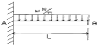
- RA = ωL, MA = ωL2 /6
- RA = ωL, MA = ωL2 /3
- RA = ω/2, MA = ωL2 /2
- RA = ωL, MA = ωL2 /2
(정답률: 알수없음)
23. 두께 1 mm의 강제벨트를 지름 120cm의 원통에 감으면 최대몇 MPa의 굽힘응력이 발생하는가? (단, 탄성계수 E= 210 GPa 이다.)
- 256
- 175
- 512
- 350
(정답률: 알수없음)
24. 2축 응력에 대한 모어(Mohr)의 원을 설명으로 틀린 것은?
- 원의 중심은 원점좌우의 응력축상에 어디라도 놓일수 있다.
- 원의 중심은 원점의 상하 어디라도 놓일 수 있다.
- 이 원에서 임의의 경사면상의 응력에 관한 가능한 모든 지식을 얻을 수 있다.
- 공액응력 σn과 σ'n의 합은 주어진 두 응력의 합σx+σy 와 같다.
(정답률: 알수없음)
25. 그림과 같은 평면응력상태에서 최대 전단응력(MPa)은? (단, σx=175MPa, σy=35MPa, τxy=60MPa 이다.)
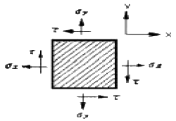
- 38
- 53
- 92
- 108
(정답률: 알수없음)
26. 그림과 같은 삼각형 분포하중을 받는 단순보에서 최대 굽힘 모멘트는?
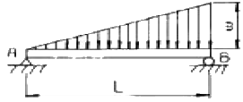
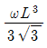
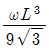
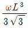
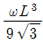
(정답률: 알수없음)
27. 그림과 같은 막대의 자중을 고려한 총 늘어난 량은? (단, 하중 P, 막대 단면적 A, 비중량은 γ라 한다.)
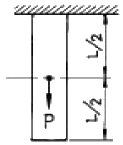
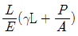
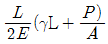
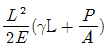
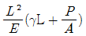
(정답률: 알수없음)
28. 비틀림모멘트 1 kN·m가 직경 50 mm인 축에 작용하고 있다면 최대 전단응력은 몇 MPa인가? (단, 축의 전단탄성계수 G = 85 GPa이다.)
- 34.1
- 37.2
- 40.7
- 43.2
(정답률: 알수없음)
29. 직경 10 ㎜의 환봉이 축방향으로 P라는 인장력을 받고 있다. 이 때 지름이 0.025 ㎜ 만큼 줄었다면 인장력 P는? (단, 봉의 포아송비는 μ=0.3, 탄성계수 E=210 GPa 이다.)
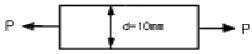
- 12 kN
- 148 kN
- 137 kN
- 145 kN
(정답률: 알수없음)
30. σx = σy = 0, τxy = 0.1 GPa 일 때 두 주응력의 크기 σ1, σ2 는?
- σ1 = 0.25 GPa, σ2 = 0.1 GPa
- σ1 = 0.2 GPa, σ2 = 0.⑤ GPa
- σ1 = 0.1 GPa, σ2 = -0.1 GPa
- σ1 = 0.075 GPa, σ2 = -0.⑤ GPa
(정답률: 알수없음)
31. 12mm x 40mm 와 20mm x 20mm 의 사각형 두개가 그림과 같이 결합된 도형의 도심(圖心)으로 옳은 것은?
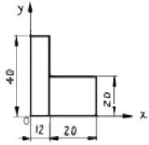
- (13.3, 15.5)
- (14.1, 14.3)
- (15.4, 13.1)
- (16.5, 12.4)
(정답률: 알수없음)
32. 탄성계수 E, 포아송 비 ν, 한변의 길이가 a인 정육면체의 탄성체를 강체인 동일 형태의 구멍에 넣어 압력 P를 가한다. 탄성체와 구멍사이의 마찰을 무시하면 탄성체의 윗면의 변위 δ는?
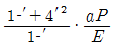
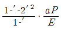
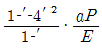
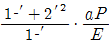
(정답률: 알수없음)
33. 그림과 같은 외팔보의 균일 분포하중이 전 길이에 작용할때 B단의 처짐은 ?
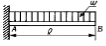
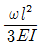
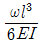
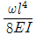
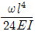
(정답률: 알수없음)
34. 그림과 같이 단순지지되어 중앙에서 집중하중 P를 받는 직사각형 단면보에서 보의 길이는 L, 폭이 b, 높이가 h 일때, 최대굽힘응력과 최대전단응력의 비 복원중 의 값은? ((문제 오류로 복원중입니다. 정확한 내용을 아시는 분께서는 오류신고를 통하여 내용 작성 부탁 드립니다. 정답은 4번입니다.)
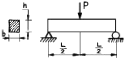
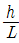
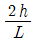
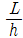
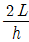
(정답률: 알수없음)
35. 길이가 L인 양단 고정보의 중앙점에 집중하중 P가 작용할 때 중앙점의 최대 처짐은? (단, E : 탄성계수, Ⅰ: 단면 2차모멘트)
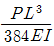
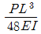
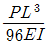
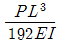
(정답률: 알수없음)
36. 동일한 재질과 단면을 갖고 길이가 다른 두 개의 기둥이 하나는 양단이 핀 지지 되어 있고, 다른 하나는 양단이 고정된 채, 길이방향의 압축하중을 받고 있다. 두 기둥의 좌굴에 관한 임계하중이 같다고 하면, 핀 지지 기둥 길이(L1)와 고정 기둥의 길이(L2)의 비 L1/L2 는?
- 0.25
- 0.5
- 1.0
- 1.25
(정답률: 알수없음)
37. 그림과 같은 원형단면의 외팔보 2개의 지름의 비가 d1 : d2 = 5 : 6 이고, 그 밖의 치수와 재료는 똑같다. 이 두 보가 똑같은 집중하중을 받고 있을 때, 이들 보속에 저장되는 변형에너지의 비 U1 : U2 는?
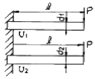
- 63 : 53
- 62 : 52
- 64 : 54
- 53 : 63
(정답률: 알수없음)
38. 15℃에서 양단을 고정한 둥근 막대에 발생하는 열응력이 85 MPa을 넘지 않도록 하려면 온도의 허용범위는? (단, 탄성계수 E=210 GPa, 팽창계수 α=11.5x10-6/℃)
- -10.2℃ ∼ 35.2℃
- -20.2℃ ∼ 50.2℃
- -30.2℃ ∼ 45.2℃
- -40.2℃ ∼ 50.2℃
(정답률: 알수없음)
39. 그림과 같이 한 끝이 고정된 축에 두 개의 토크가 작용하고 있다. 고정단에서 축에 작용하는 토크는?
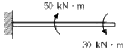
- 10 kN·m
- 20 kN·m
- 30 kN·m
- 40 kN·m
(정답률: 84%)
40. 길이가 3 m이고 지름이 16 ㎜인 원형단면봉에 30 kN의 축 하중을 작용시켰을 때 탄성신장량 2.2 ㎜가 생겼다면 이 재료의 탄성계수는 몇 GPa 인가?
- 2.03
- 203
- 1.36
- 136
(정답률: 알수없음)
3과목: 용접야금
41. 용접후에 응력제거 풀림의 효과 설명으로 틀린 것은?
- 응력부식에 대한 저항력의 증대
- 용접부의 함유 수소 방출에 의한 연성 증가
- 열영향부의 템퍼링 연화
- 강도의 감소
(정답률: 알수없음)
42. 경도가 큰 재료에 내부 응력을 제거하거나 인성을 주기위해 A1 변태점 이하로 가열하여 서냉하는 열처리 방법은?
- 담금질
- 뜨임
- 고온풀림
- 저온풀림
(정답률: 알수없음)
43. 용접후처리에서 변형 교정방법에 포함되지 않는 것은?
- 피닝법
- 비파괴법
- 롤링법
- 가열법
(정답률: 84%)
44. Fe-C계 상태도에서 페라이트 영역 확장 원소는?
- 크롬(Cr)
- 니켈(Ni)
- 망간(Mn)
- 코발트(Co)
(정답률: 알수없음)
45. 용접에서 황과 인의 반응에 관한 설명으로 올바른 것은?
- 황과 인은 용접 종료 후에 용접금속의 기계적 성질을 향상시킨다.
- 용융 슬래그의 염기도가 높을수록 탈황은 진행하기 쉽다.
- 용융 슬래그의 환원성이 높을수록 탈황은 진행하기 어렵다.
- 용융 슬래그의 산성이 높을수록 탈인은 진행하기 어렵다.
(정답률: 알수없음)
46. Cu의 용접시 발생하기 쉬운 기공은 어떤 원소와 관계가 가장 깊은가?
- N
- O
- H
- C
(정답률: 알수없음)
47. 알루미늄을 주성분으로 한 코비타리움(Cobitalium)과 유사한 합금으로 강도 내열성이 우수하고 고온강도가 크므로 공냉 실린더 헤드, 피스톤 등에 이용되는 합금명은?
- Y합금
- 라우탈(Lautal)
- 듀랄루민
- 도우메탈(Dow metal)
(정답률: 75%)
48. 다음 중 열영향부의 냉각 속도에 영향을 미치는 중요한 용접 조건이 아닌 것은?
- 용접 전류
- 아크 전압
- 아크 분포
- 용접 속도
(정답률: 알수없음)
49. 탄소강 중에서 고온에서 취성을 갖게하는 즉, 적열취성의 원인이 되는 원소는?
- P
- S
- Si
- Mn
(정답률: 77%)
50. 아래보기 자세로 아크용접할 때 용접봉의 용적이 모재에 이행하는 형식과 용접봉의 피복제 종류를 올바르게 열거한 것은?
- 분무상 이행, 고산화티탄계
- 괴상이행, 일미나이트계
- 폭발이행, 일미나이트계
- 접촉단락이행, 셀룰로스계
(정답률: 62%)
51. 용접봉에 습기가 있는 상태에서 용접을 했을 경우 가장 많이 생기는 결함은?
- 기공
- 크레이터
- 오우버랩
- 언더컷
(정답률: 알수없음)
52. 용접금속의 용융경계 부근 주변에서 중앙부 주변에 걸쳐서 성분이 변화하는 것과 가장 관계있는 용어는?
- 라멜라테어
- 라미네이션
- 매크로 편석
- 마이크로 편석
(정답률: 알수없음)
53. 순금속의 융점에서의 자유도는?
- 0
- 1
- 2
- 3
(정답률: 알수없음)
54. 용접부의 마크로 조직과 기계적 성질 평가에서 가장 취성이 큰 부분은?
- 용착 금속
- 열 영향부(HAZ)
- 열영향부
- 모재
(정답률: 알수없음)
55. 다음 중 포정반응(peritectic reaction)을 나타내는 합금이 아닌 것은?
- Fe-C 합금
- Au-Fe 합금
- Cd-Hg 합금
- Ag-Cu 합금
(정답률: 알수없음)
56. 탄소강의 용접 열영향부(HAZ)를 잘못 설명한 것은?
- 현미경 조직의 변화를 가져온다.
- 강도가 크고 연신이 적어진다.
- 본드부분에 가까울수록 경도가 커진다.
- 수지상 결정조직을 나타낸다.
(정답률: 알수없음)
57. 18 Cr - 8 Ni 스테인리스강에서 입간부식(intergranular corrosion)의 방지법으로 틀린 것은 ?
- 열처리에 의한 방법
- α철의 형성원소를 첨가하는 방법
- 탄화물의 석출형태를 조절하는 방법
- 탄화물의 안정화 원소를 첨가하는 방법
(정답률: 알수없음)
58. 용접부의 다음 조직 중 상온에서 가장 불안정한 조직은?
- Martensite
- Ferrite
- 잔류 Austenite
- Bainite
(정답률: 알수없음)
59. 연성이 작은 용착금속이 응고 직후 고온균열을 일으킬 때 나타나는 응력과 현상은?
- 수축응력으로 결정입계에 생긴다.
- 팽창응력으로 결정입계에 생긴다.
- 전단응력으로 결정입계에 생긴다.
- 인장응력으로 결정입계에 생긴다.
(정답률: 알수없음)
60. 연강의 용접부에서 가장 인성(toughness)이 풍부한 부분은 어느 것인가?
- 조립부
- 미세부
- 입상 펄라이트부
- 취화부
(정답률: 알수없음)
4과목: 용접구조설계
61. 용접 홈(groove) 설계 용접에 대한 설명중 틀린 것은?
- 루트 반지름 r은 가능한 크게 한다.
- 홈각을 가능한 크게 한다.
- 홈의 단면적을 가능한 작게 한다.
- Root 간격의 최대치는 사용봉의 지름을 한도로 한다.
(정답률: 알수없음)
62. 용접부에 발생하는 잔류응력과 용접변형 관계를 가장 올바르게 설명한 것은?
- 강도상 중요한 후판에서는 용접변형이 쉽게 발생하고, 박판에서는 잔류응력의 발생 염려가 크다.
- 박판에서는 용접변형이 적게 되는 시공법을 이용하고, 후판에서는 잔류응력의 발생이 적게되는 시공법을 이용한다.
- 용접변형이 크게 되면 용접균열의 발생이 쉽고, 잔류응력은 구속을 크게 하면 감소된다.
- 용착법에 의한 잔류응력의 경감법은 후퇴법이 가장 좋고, 용접변형의 경감법은 비석법에 의한 것이 가장 좋다.
(정답률: 알수없음)
63. 그림과 같은 지그는 용접시 다음 중 어떤 변형성분을 방지하는 것이 주목적인가?
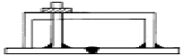
- 종수축
- 종방향(용접선 방향) 굽힘변형
- 횡방향 각변형
- 좌굴변형
(정답률: 알수없음)
64. 인장, 압축의 반복하중 30ton이 작용하는 폭 600㎜의 두장의 강판을 맞대기 용접(완전용입)을 하였을 때, 두 강판의 두께는 얼마로 해야 되는가? (단, 허용응력 σ = 500 kgf/㎝2으로 한다.)
- 500㎜
- 50㎜
- 15㎜
- 10㎜
(정답률: 알수없음)
65. 용접시 아래 보기 자세로 용접 하기 위해 사용되는 회전대는?
- 용접 바이스(Vise)
- 용접 웰더(Welder)
- 용접대(Base Die)
- 용접 매니퓰레이트(Manipulator)
(정답률: 알수없음)
66. 용접부에서 구리로 된 덮개판을 두던지 뒷면에서 용접부를 수냉 또는 용접부 근처에 물기가 있는 석면, 천 등을 두고 모재에 용접 입열을 막음으로서 용접변형을 방지하는 방법인 것은?
- 억제법
- 역변형법
- 도열법
- 피닝법
(정답률: 알수없음)
67. 용접 균열시험법중에서 저온 균열시험의 외부 구속형 시험방법은 어느 것인가?
- TRC 시험
- CTS 시험
- fisco 시험
- 슬릿형 시험
(정답률: 알수없음)
68. 피로강도(Fatigue Strength)를 정의하는 변동 하중에는 정현파 응력 파형이 있는데 여기에 속하지 않는 것은?
- 완전 양진 파형
- 완전 편진 파형
- 부분 편진 파형
- 피로 한도 파형
(정답률: 알수없음)
69. 용접잔류 응력에 대한 설명 중 틀린 것은?
- 용접잔류 응력은 용접부가 냉각할 때 발생한다.
- 용접잔류 응력은 용접부가 가열될 때 발생한다.
- 용착금속의 내부에는 냉각된 후 잔류응력이 존재한다.
- 잔류응력이 존재하면 그 구조물은 빨리 파괴될 수 있다
(정답률: 알수없음)
70. 강의 임계온도역(약 800 ∼ 700℃)부근에서, 일반적인 아크용접의 냉각속도로 가장 적합한 것은?
- 30 ∼ 100℃/min
- 110 ∼ 560℃/min
- 500 ∼ 1000℃/min
- 800 ∼ 2200℃/min
(정답률: 알수없음)
71. 다음 중 그 성분량을 일정 이상으로 첨가하는 경우에 인장강도와 경도를 증가시키는 반면, 용접성을 떨어뜨리는 화학 성분은?
- 실리콘(Si)
- 유황(S)
- 탄소(C)
- 인(P)
(정답률: 알수없음)
72. 용접경비의 견적에서 용접봉의 소요량을 산출하거나 용접작업 시간을 추정하는데 용접봉의 용착 효율이 필요하다. 다음의 공식 중 용착효율의 공식으로 맞는 것은?
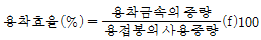
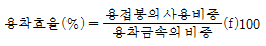
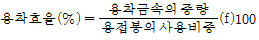
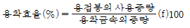
(정답률: 알수없음)
73. 다음 중 용접부의 내부 기공(Blow hole)을 검사하는 가장 신뢰성 있는 검사법은?
- 형광검사
- 침투검사
- 방사선검사
- 굽힘검사
(정답률: 알수없음)
74. 용접후의 잔류응력의 완화법이 아닌 것은?
- 가우징(gouging)법
- 응력제거 풀림법
- 피닝(peening)법
- 저온 응력 완화법
(정답률: 알수없음)
75. 용접기호의 기입 표시방법 내용에 포함되지 않는 것은?
- 홈의 형상
- 홈의 각도
- 용접선의 길이
- 용접설계법
(정답률: 알수없음)
76. 저합금 내열강에 대한 용접후 열처리의 목적이 아닌 것은?
- 고온강도의 안정화
- 조직입계의 조대화
- 용접잔류응력의 완화
- 내열, 내식성의 향상
(정답률: 알수없음)
77. 용접물은 용접 중에 용착금속의 수축과 열영향부의 국부적 가열 및 냉각을 받으므로 용접부에서 발생하는 체적변화는 구조물의 용접변형의 원인이 된다. 용접 후 용접변형의 종류가 아닌 것은 ?
- 횡수축
- 종수축
- 회전변형
- 역변형
(정답률: 80%)
78. 용접설계상 주의사항 설명으로 틀린 것은?
- 용접하기에 알맞는 이음 형식을 택해야 한다.
- 용접선은 가급적 짧게 하여야 한다.
- 용접한 부분을 한 곳에 모이게 한다.
- 용접하기 쉬운 자세를 한다.
(정답률: 알수없음)
79. V형 맞대기 용접에서,판두께가 t[mm]이고, 용접선의 유효길이가 L[mm], 압축응력이 σ[kgf/㎜2)]인 경우, 완전용입으로 고려할 때 용접선 방향에 직각으로 작용하는 압축하중 P[㎏f]를 구하는 식은 ?
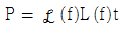
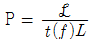
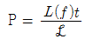
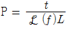
(정답률: 90%)
80. 전면 필릿용접에서, 다리길이(각장)를 h라면 이론 목두께 ht 를 구하는 식은?
- ht = h·sin60°
- ht = h·tan60°
- ht = h·cos45°
- ht = h·cot45°
(정답률: 82%)
5과목: 용접일반 및 안전관리
81. 이산화 탄소 아크 용접의 장점 설명 중 잘못 된 것은?
- 용입이 깊고 용접속도가 매우 빠르다.
- 용착금속의 기계적 성질 및 금속학적 성질이 좋다.
- 적용 재질은 철 및 비철금속에 폭넓게 이용된다.
- 용접봉을 갈아 끼울 필요가 없어 아크 시간을 높일 수 있다.
(정답률: 알수없음)
82. 이산화탄소 아크용접시 건강에 가장 나쁜 영향을 미치는 것은?
- 이산화탄소의 축적에 의한 질식
- 질소의 축적에 의한 중독작용
- 복사에너지에 의한 질식
- 탄소의 축적에 의한 질식
(정답률: 79%)
83. 플라스마 젯(Plasma jet)용접의 특징 설명으로 틀린 것은?
- 용입이 얕고 비드폭이 넓으며 용접속도가 느리다.
- 용접홈은 簿형이면 되며 전극봉의 소모가 적다.
- 용접부의 야금학적,기계적 성질이 양호하다.
- 각종 재료의 용접이 가능하다.
(정답률: 알수없음)
84. 헬멧이나 핸드시일드의 차광 유리앞에 투명유리를 끼우는 이유로 가장 타당한 것은?
- 차광유리를 보호하기 위하여
- 차광유리만으로는 적외선을 차단할수 없으므로
- 시력을 도와주기 위하여
- 차광유리만으로는 가시광선이 들어오므로
(정답률: 86%)
85. 가스용접시 팁이 과열되었거나 가스압력과 유량이 부적당할 때, "빵빵"하면서 꺼졌다가 다시 켜지는 현상을 무엇이라 하는가?
- 정류
- 역류
- 인화
- 역화
(정답률: 알수없음)
86. 용접시 안전과 관련된 설명중 틀린 것은?
- 아크빛은 전광성 안염의 요인이 되므로 성능좋은 차광 보호용구를 반드시 착용하여야 한다.
- 전자 beam 용접시에는 X - 선등의 방사선 누출에 각별히 주의하여야 한다.
- 수동아크 용접용 holder는 비교적 낮은 전압이 들어오므로 절연이 다소 나쁘더라도 전격사고의 위험이 없다.
- 용접작업 근처에는 도료,인화성 물질이 있어서는 안되며 가연성가스에도 조심하여야 한다.
(정답률: 80%)
87. 내용적 50리터의 산소용기에 설치한 조정기의 고압게이지가 80 ㎏f/㎝2 에서 산소를 사용한 후 10 ㎏f/㎝2 으로 떨어졌다면 산소의 소비량(리터)은?
- 3000ℓ
- 3500ℓ
- 3750ℓ
- 4200ℓ
(정답률: 알수없음)
88. 아크(arc)의 물리적 성질에서 아크(arc)란 무엇인가?
- 양극과 음극사이의 고온에서 해리,이온화된 기체에 의하여 전류가 흐르는 상태
- 용접심선이 시간당 용융되는 상태
- 전자는 음극쪽으로 흐르며, 이온은 그 반대로 양극쪽으로 흐르는 상태
- 용접봉이나 심선의 소모량에 대한 용착금속의 중량비
(정답률: 알수없음)
89. 저항 용접 중 맞대기로 용접하는 용접법은?
- 플래시 용접
- 심 용접
- 점 용접
- 프로젝션 용접
(정답률: 알수없음)
90. 서브머지드 아크용접의 장점 및 단점에 대한 각각의 설명으로 틀린 것은?
- 장점 : 용접선이 구부러져 있어도 조작이 쉽고 능률적이다.
- 장점 : 적당한 와이어와 용제를 써서 용착금속의 성질을 개선할수 있다.
- 단점 : 자동용접이므로 설비비가 많이 든다.
- 단점 : 대체로 아래보기 또는 수평필릿 용접에만 한정된다.
(정답률: 알수없음)
91. 피복아크용접봉의 피복제의 역할에 해당되는 것은?
- 탄화성 또는 산화성 분위기로 공기로 인한 산화, 질화등의 해를 방지하여 스패터를 많게 한다.
- 용착금속에 합금원소를 첨가하며 전기를 잘 통하게 한다.
- 용융점이 높은 무거운 슬래그를 만들며 용적을 크게 한다.
- 탈산정련작용을 하며, 파형이 고운 비드를 만들며, 용착금속의 급냉을 방지한다.
(정답률: 알수없음)
92. 피복아크용접시 용접기의 1차 입력이 25[kVA]일 때 용접기의 1차 측에 설치할 안전스위치에 알맞은 퓨즈는? (단, 이 용접기의 전원전압은 200[V]이다.)
- 80[A]
- 100[A]
- 125[A]
- 150[A]
(정답률: 82%)
93. 피복아크용접에서 용착금속의 보호형식이 슬래그 생성식이 아닌 피복제는?
- E 4301
- E 4311
- E 4316
- E 4327
(정답률: 알수없음)
94. 테르밋 용접법의 특징이 아닌 것은?
- 용접하는 시간이 비교적 짧다.
- 용접작업후 변형이 적다.
- 이동을 할 수 없고 전기가 필요하다.
- 용접용 기구가 간단하고 설비비가 싸다.
(정답률: 알수없음)
95. 용접 자동화가 곤란한 용접 방법은?
- 고주파 용접(High Frequency Resistance Welding)
- 시임 용접(Seam Welding)
- 스터드 용접(Stud Welding)
- 폭발 용접(Explosive Welding)
(정답률: 알수없음)
96. 붕사,붕산,탄산소다등의 혼합물 즉 탄산소다 15%에 붕산 15% 그리고 중탄산소다 70%의 혼합물은 무슨용접의 용제로 사용되는가?
- 주철
- 알루미늄
- 구리와 그합금
- 연강
(정답률: 알수없음)
97. 용접중 전류가 만드는 자장이 평형을 잃어버릴 때 자력이 아크에 작용을 하도록 아크가 정상상태에서 벗어나 용접점 밖으로 벗어나는 현상을 무엇이라고 하는가?
- 전류불림
- 자기불림
- 아크제어
- 아크제거
(정답률: 알수없음)
98. 용융 용접의 일반적 특징에 해당되지 않는것은?
- 자재의 절약
- 공수의 감소
- 성능과 수명의 향상
- 품질 검사의 양호
(정답률: 80%)
99. 용접입열량을 계산하는 전기적 에너지[ H (Joule/cm) ]를 나타내는 올바른 항은? (단, E:아크 전압, I:아크 전류, V:용접속도이다.)
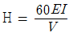
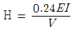
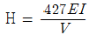
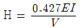
(정답률: 알수없음)
100. 가스 텅스텐 아크(Gas Tungsten Arc, TIG) 용접시에 청정효과를 기대할 수 있는 전원 특성은?
- 직류 정극성
- 직류 역극성
- 교류
- 용극성
(정답률: 알수없음)